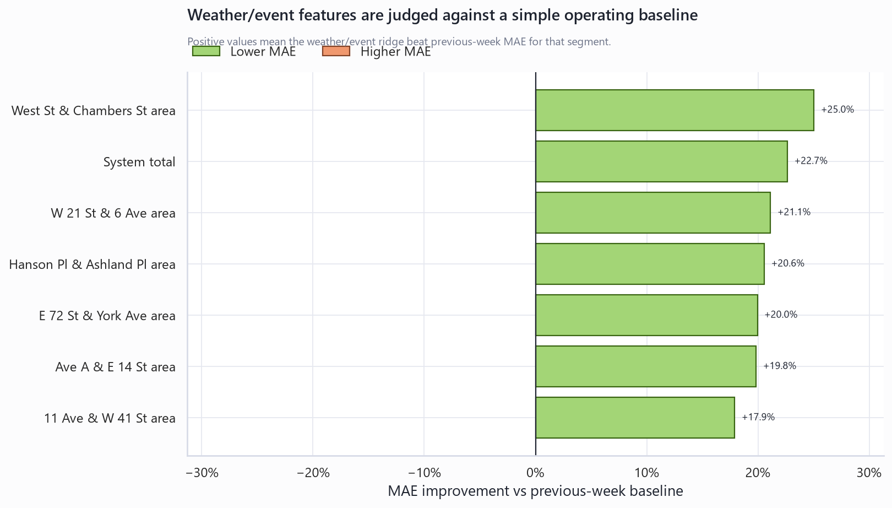
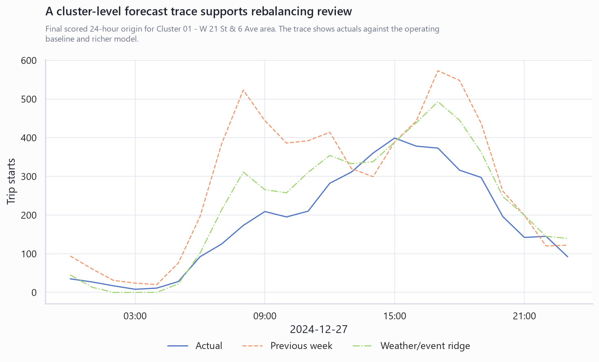
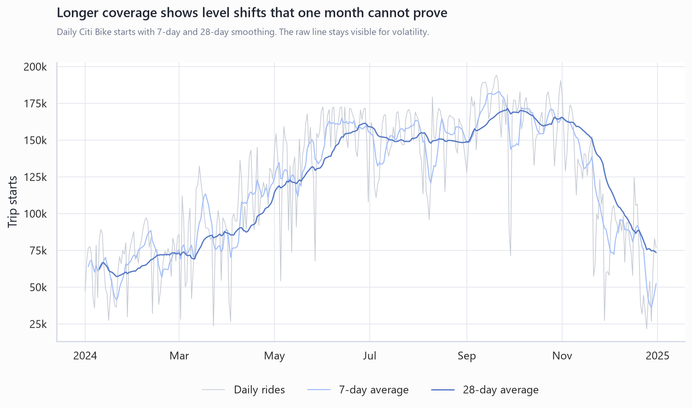

Citi Bike Time Series Portfolio Dashboard
A reviewer-first surface for the full-year forecasting proof, station clusters, feature-family lift, and rebalancing decision simulator.
Decision Context
Recommended decision: use the weather/event ridge as a rebalancing and station-capacity planning watchlist, with previous-week and calendar-lag ridge retained as controls. The system-level weather/event model improved MAE by +22.7% versus the previous-week baseline. The top current planning cluster is Cluster 01 - W 21 St & 6 Ave area.
Scenario Simulator
The simulator does not claim to dispatch trucks. It ranks station clusters for operating review under a few plausible demand-pressure scenarios using observed annual scale, model error, WAPE, and baseline lift.
| Cluster | Tier | Risk Score | Expected Hourly Starts | WAPE | Lift vs Previous Week | Action |
|---|---|---|---|---|---|---|
| Cluster 01 - W 21 St & 6 Ave area | High | 0.78 | 452.1 | 14.3% | +21.1% | Pre-review capacity and bike positioning before the normal weekday. |
| Cluster 02 - 11 Ave & W 41 St area | Medium | 0.55 | 277.4 | 15.0% | +17.9% | Monitor against the previous-week baseline and review during peak hours. |
| Cluster 03 - West St & Chambers St area | Medium | 0.51 | 269.7 | 15.3% | +25.0% | Monitor against the previous-week baseline and review during peak hours. |
| Cluster 04 - Ave A & E 14 St area | Monitor | 0.32 | 125.8 | 15.6% | +19.8% | Keep on the watchlist; no immediate rebalancing review from demand alone. |
| Cluster 06 - Hanson Pl & Ashland Pl area | Monitor | 0.28 | 8.9 | 33.4% | +20.6% | Keep on the watchlist; no immediate rebalancing review from demand alone. |
| Cluster 05 - E 72 St & York Ave area | Monitor | 0.26 | 70.4 | 18.4% | +20.0% | Keep on the watchlist; no immediate rebalancing review from demand alone. |
| Cluster 01 - W 21 St & 6 Ave area | High | 0.82 | 388.8 | 14.3% | +21.1% | Pre-review capacity and bike positioning before the rain or snow pressure. |
| Cluster 02 - 11 Ave & W 41 St area | High | 0.57 | 238.6 | 15.0% | +17.9% | Pre-review capacity and bike positioning before the rain or snow pressure. |
| Cluster 03 - West St & Chambers St area | High | 0.54 | 231.9 | 15.3% | +25.0% | Pre-review capacity and bike positioning before the rain or snow pressure. |
| Cluster 04 - Ave A & E 14 St area | Medium | 0.34 | 108.2 | 15.6% | +19.8% | Monitor against the previous-week baseline and review during peak hours. |
| Cluster 06 - Hanson Pl & Ashland Pl area | Monitor | 0.29 | 7.7 | 33.4% | +20.6% | Keep on the watchlist; no immediate rebalancing review from demand alone. |
| Cluster 05 - E 72 St & York Ave area | Monitor | 0.28 | 60.5 | 18.4% | +20.0% | Keep on the watchlist; no immediate rebalancing review from demand alone. |
| Cluster 01 - W 21 St & 6 Ave area | High | 1.00 | 506.3 | 14.3% | +21.1% | Pre-review capacity and bike positioning before the major event window. |
| Cluster 02 - 11 Ave & W 41 St area | High | 0.76 | 310.7 | 15.0% | +17.9% | Pre-review capacity and bike positioning before the major event window. |
| Cluster 03 - West St & Chambers St area | High | 0.71 | 302.0 | 15.3% | +25.0% | Pre-review capacity and bike positioning before the major event window. |
| Cluster 04 - Ave A & E 14 St area | Medium | 0.45 | 140.9 | 15.6% | +19.8% | Monitor against the previous-week baseline and review during peak hours. |
| Cluster 06 - Hanson Pl & Ashland Pl area | Medium | 0.38 | 10.0 | 33.4% | +20.6% | Monitor against the previous-week baseline and review during peak hours. |
| Cluster 05 - E 72 St & York Ave area | Medium | 0.37 | 78.8 | 18.4% | +20.0% | Monitor against the previous-week baseline and review during peak hours. |
Feature Explainability
Instead of using in-sample coefficients as proof, this table explains feature families by out-of-sample lift. Each family must reduce rolling validation error against the simpler model before it earns space in the portfolio narrative.
| Feature Family | Segments Improved | Segments Evaluated | Weighted Lift | Largest Gain | Interpretation |
|---|---|---|---|---|---|
| Calendar and lag features | 7 | 7 | +18.2% | System total | Calendar and lag features improved MAE for every evaluated segment. |
| Weather and event features | 7 | 7 | +5.1% | System total | Weather and event features improved MAE for every evaluated segment. |
Model Comparison
| Segment | Model | MAE | RMSE | WAPE |
|---|---|---|---|---|
| System total | Weather/event ridge | 711 | 1,037 | 12.6% |
| System total | Calendar + lag ridge | 750 | 1,163 | 13.2% |
| System total | Previous week | 919 | 1,538 | 16.2% |
| Cluster 01 - W 21 St & 6 Ave area | Weather/event ridge | 72 | 104 | 14.3% |
| Cluster 01 - W 21 St & 6 Ave area | Calendar + lag ridge | 75 | 115 | 14.9% |
| Cluster 01 - W 21 St & 6 Ave area | Previous week | 91 | 150 | 18.1% |
| Cluster 02 - 11 Ave & W 41 St area | Weather/event ridge | 46 | 65 | 15.0% |
| Cluster 02 - 11 Ave & W 41 St area | Calendar + lag ridge | 47 | 72 | 15.6% |
| Cluster 02 - 11 Ave & W 41 St area | Previous week | 56 | 90 | 18.2% |
| Cluster 03 - West St & Chambers St area | Weather/event ridge | 46 | 66 | 15.3% |
| Cluster 03 - West St & Chambers St area | Calendar + lag ridge | 49 | 74 | 16.3% |
| Cluster 03 - West St & Chambers St area | Previous week | 61 | 96 | 20.5% |
| Cluster 04 - Ave A & E 14 St area | Weather/event ridge | 22 | 31 | 15.6% |
| Cluster 04 - Ave A & E 14 St area | Calendar + lag ridge | 24 | 33 | 16.4% |
| Cluster 04 - Ave A & E 14 St area | Previous week | 28 | 42 | 19.5% |
| Cluster 05 - E 72 St & York Ave area | Weather/event ridge | 15 | 20 | 18.4% |
| Cluster 05 - E 72 St & York Ave area | Calendar + lag ridge | 15 | 21 | 19.2% |
| Cluster 05 - E 72 St & York Ave area | Previous week | 18 | 27 | 23.0% |
| Cluster 06 - Hanson Pl & Ashland Pl area | Weather/event ridge | 3 | 5 | 33.4% |
| Cluster 06 - Hanson Pl & Ashland Pl area | Calendar + lag ridge | 3 | 5 | 33.7% |
| Cluster 06 - Hanson Pl & Ashland Pl area | Previous week | 4 | 6 | 42.0% |
Core Visuals



Source And Limits
- Source artifacts are generated from public Citi Bike 2024 monthly archives and Open-Meteo historical weather.
- The dashboard target is hourly trip starts, not live bike inventory, dock availability, or actual truck moves.
- Scenario scores are planning indices. They should be calibrated against station capacity and availability snapshots before operational use.